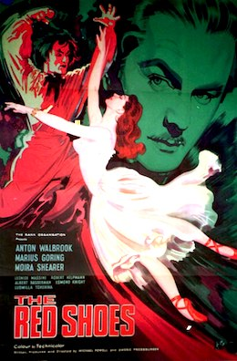

The Red Shoes

Emeric Pressburger and Michael Powell
1948
133 minutes
Wikipedia link
IMDB link
TV Tropes link
This is text.
Time to choose something different:
- So what would have happened if she had just clicked those red shoes together a couple of times while saying "There's no place like home?" - Turn to section 44
- I don't often say this, but...less ballet, more genocide, please! - Turn to section 118
- Don't ask me why, but I think a low-budget Psycho ripoff would be a nice chaser for this! - Turn to section 22